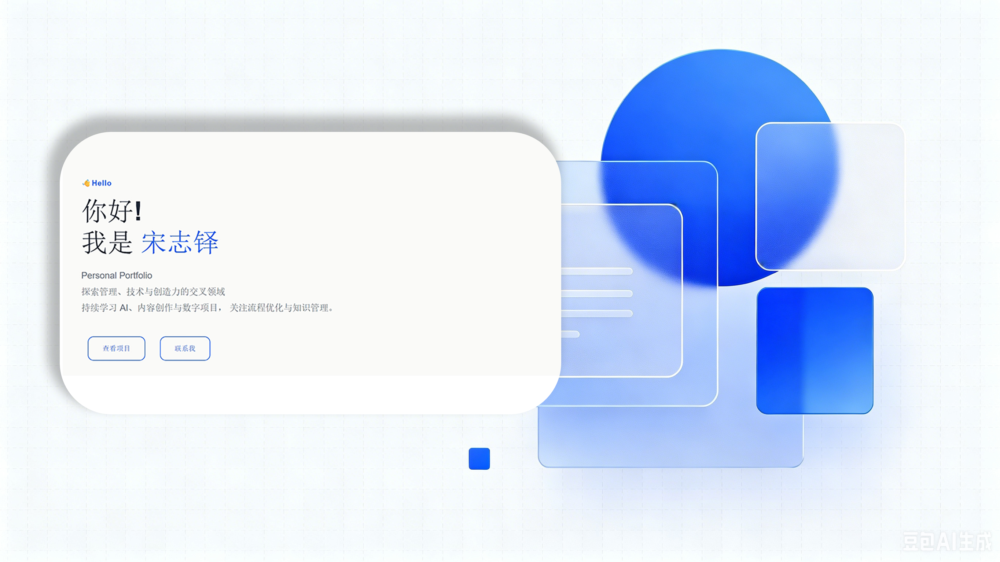
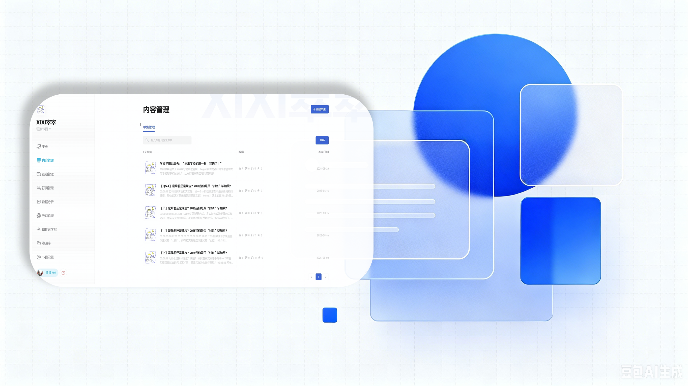
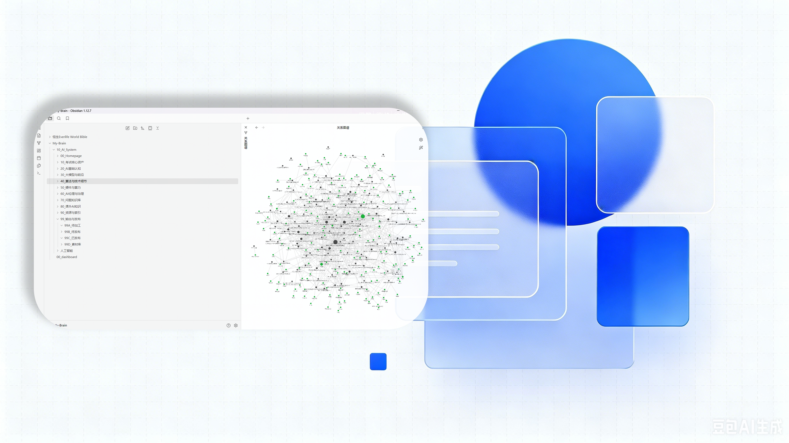

01 / ABOUT
关于我
我叫宋志铎，毕业于邵阳学院质量管理专业， 拥有管理学学士学位。
我关注人工智能、知识管理、数字工具以及个人效率， 喜欢通过持续学习和实践不断提升自己的能力。
这个网站是我的作品集合：工作经历、项目实践、内容创作 与知识积累，都以可查看的产出形式呈现。
02 / EXPERIENCE
工作经历
2026
运营｜灰隼文创工作室
2026.05 – 2026.07
负责文创产品信息整理与上架，使用 Photoshop 独立制作商品详情页， 交付可直接上架的图文内容；参与门店灯光布局、商品陈列与空间规划， 输出陈列调整方案。
产出：商品详情页 · 产品信息清单 · 陈列方案
2025
安全员｜锡林浩特市城市更新公司
2025.02 – 2026.02
负责燃气门站为期一年的日常运行与安全管理，按规程完成运输车辆接收、 称重、卸车及储罐运行监控；持续记录运行数据、跟踪设备状态， 保持现场运行安全稳定。
产出：运行记录 · 设备监控记录 · 安全操作执行
2025
咖啡师 / 店铺运营协助｜宜半 One-Half Coffee
2025.05 – 2025.10
参与咖啡及饮品制作，协助门店装饰、商品陈列与海报设计； 根据运营需求整理饮品制作流程，起草基础标准化文件， 把分散的操作经验沉淀为可培训、可复用的文字资料。
产出：饮品制作流程文档 · 标准化文件初稿
2024
摄影师｜摄影工作室
2024.06 – 2025.02
按商业摄影标准流程完成客户拍摄，配合化妆、选片与交付等环节， 在持续实操中熟悉标准化服务流程与客户沟通方式。
产出：客户拍摄成片 · 标准化服务流程执行
2023
软装设计助理（实习）｜合筑设计
2023.06 – 2023.12
收集并分类整理家居设计素材，协助制作产品报价单， 参与施工现场尺寸测量与项目资料整理； 把散乱素材整理为可检索的分类资料，为报价与施工环节提供支持。
产出：分类素材库 · 产品报价单 · 项目资料
03 / PROJECTS
项目经历

PROJECT 01
个人 Portfolio 网站开发
独立完成个人网站从设计、开发到部署的全流程。
使用 HTML、CSS 构建响应式页面，通过 Git 进行版本管理与持续迭代（30+ 次提交），并部署至 GitHub Pages 与腾讯云。
产出：线上作品集网站 · 开源仓库 · 30+ 次迭代提交
查看网站
原创播客项目
独立策划并运营个人播客，负责选题策划、内容研究、音频制作 与社交媒体运营，节目已在小宇宙上线，并同步在小红书发布相关内容。 围绕文化、社会议题持续创作，通过资料整理、内容拆解与表达优化， 打磨内容生产与信息传递能力。
产出：播客节目 · 小红书内容 · 选题与资料整理

个人知识管理系统
使用 Obsidian 搭建个人知识库， 对人工智能、设计、阅读、英语学习等内容进行结构化整理， 建立可长期积累、可检索的个人知识体系， 形成持续学习与信息管理的工作流。
产出：知识库体系 · 结构化笔记 · 信息管理工作流
摄影作品整理项目
持续记录个人摄影作品，完成年度照片整理与作品归档， 建立从拍摄、筛选到后期整理的完整流程； 通过大量实践提升视觉观察、构图与后期处理能力。
产出：年度作品归档 · 摄影实践记录
04 / EDUCATION
教育
邵阳学院
本科｜质量管理专业
管理学学士学位
2020.09 – 2024.06
系统学习质量管理、生产运营、标准化管理及工程基础知识， 具备质量体系、流程优化和数据分析相关理论基础。
05 / SKILLS
技能
数字工具
内容创作与设计
管理与文档
基础开发
06 / CERTIFICATES
证书与资质
07 / GITHUB
GitHub
简历网站
个人 简历 网站项目。 从页面设计、HTML/CSS 编写、 响应式布局到 GitHub Pages 部署， 使用 Git 进行版本管理和持续迭代。
08 / CONTACT
联系我
如果你对我的项目、学习方向或创作内容感兴趣， 欢迎交流。
📧E-mail：
1977230406@qq.com
rainbowb400@gmail.com
🍠小红书：@江户川淞然雷子（5919344398）
🐙GitHub： rainbowb400-bot